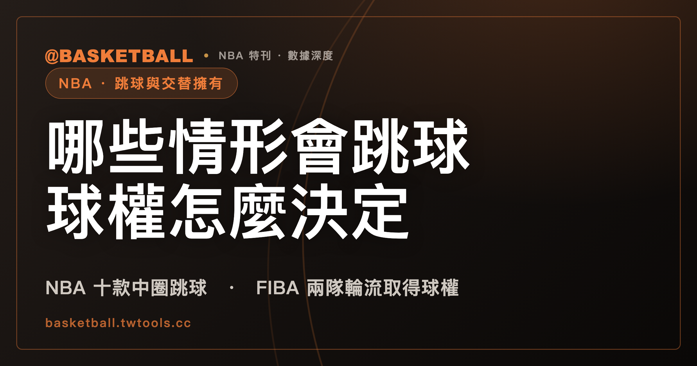

跳球情形怎麼決定球權：NBA 2025-26 規則書與 FIBA 2024 都列出情形，FIBA 另寫明所有跳球情況由兩隊輪流取得擲球入場
NBA 2025-26 規則書在 Rule 6 §V 與 §VI 等處逐款列出以跳球恢復比賽的情形，不同條文寫的地點與跳球的人並不相同。FIBA 2024 版的第一節仍以跳球開始，Article 12.4 列出七款「跳球情況」，Article 12.6.1 寫明所有跳球情況由兩隊輪流取得擲球入場的球權。讀完可以自己判一個假設情境。

新手村｜規則入門・跳球情形與交替擁有
看比賽時，裁判吹哨之後，場上可能是兩位球員在圈裡跳球，也可能是裁判指一個方向，讓其中一隊擲球入場。翻規則書的人會問：哪些情形會跳球？跳球是在哪個圈、由哪兩個人跳？球權是怎麼決定的？
本文依據的版本與取得日期如下：NBA 部分是 NBA 2025-26 官方規則書（Official Playing Rules）；FIBA 部分是 FIBA Official Basketball Rules 2024 版（2026 版規則書於 2026 年 10 月 1 日生效）。兩份文件都是 2026 年 9 月 30 日取得的全文文字檔。規則書會隨賽季或版本修訂，之後請以官方最新版為準。
「跳球」「交替擁有」「箭頭」都是中文慣稱，不是規則書的原文用語；規則書的英文是 jump ball、alternating possession、alternating possession arrow，另有 held ball 與 loose ball 兩個各自獨立的規則書用語，本文保留英文。下文第一次出現時會附上英文。
NBA 2025-26 規則書：開賽與加時用中圈跳球，第二至第四節由底線發球開始
NBA 2025-26 規則書 Rule 6 §I(a) 寫：比賽與各加時以中圈的跳球開始（"The game and overtimes shall be started with a jump ball in the center circle."）。
第二至第四節開始時，Rule 6 §I(b) 寫的是底線發球，共兩句話：
- 先取得比賽第一次球權的一隊，在第四節開始時於對手底線發球。
- 另一隊在第二節與第三節開始時於對手底線發球。
Rule 6 §I(d) 還有一句總述：任何死球之後，比賽以跳球、擲球入場或罰球恢復。這句只列出三種恢復方式，沒有指定哪種情形用哪一種；哪些情形用跳球，要看後面幾條各自列出的清單。
Rule 6 §V 十款在中圈由任兩位對手跳球
NBA 2025-26 規則書 Rule 6 §V(a) 的引言是：球在中圈由任兩位對手跳球而進入比賽，情形共十款。其中第 (4)、(8)、(9) 款使用 loose ball 一詞，本文保留英文原詞。
| 款次 | Rule 6 §V(a) 列出的情形 |
|---|---|
| (1) | 比賽開始 |
| (2) | 每個加時開始 |
| (3) | 雙方罰球違例（double free throw violation） |
| (4) | 雙方犯規發生在 loose ball 期間（double foul during a loose ball） |
| (5) | 球死時雙方皆未控球，且沒有涉及進球或違例 |
| (6) | 球停在籃框凸緣，或卡在籃圈與籃板之間 |
| (7) | 因裁判意見不同造成的雙方犯規 |
| (8) | loose ball 期間比賽被暫停；括號例外：停表當下若有一隊即將取得球權，該隊依 Rule 4 §XIV 獲判球權 |
| (9) | loose ball 期間發生打架犯規（fighting foul） |
| (10) | 裁判不確定球出界前最後是哪隊碰到，且球員無法辨認 |
兩個細節要讀仔細。第一，(8) 有括號例外：Rule 4 §XIV 寫，哨響當下若某一隊「clearly and conclusively」（明確且決定性地）即將取得球，該隊獲判球權。括號內的情形，依該例外處理。第二，(10) 有兩個條件並列，寫的是裁判不確定，而且球員無法辨認。
Rule 6 §V(b) 再補兩句：以上各款，跳球在比賽中的任兩位對手之間；若因受傷、驅逐或取消資格需要換人，替補球員不得參加跳球。
Rule 6 §VI 三款在最近的圈，由涉事的兩位球員跳球
NBA 2025-26 規則書 Rule 6 §VI(a) 是另一張清單：球在離發生地點最近的圈以跳球開始，情形有三款。
| 款次 | Rule 6 §VI(a) 列出的情形 |
|---|---|
| (1) | 發生 held ball |
| (2) | 發生雙方造成的球出界 |
| (3) | 裁判不確定最後是誰碰球 |
Rule 6 §VI(b) 第一句寫：這類跳球在涉事的兩位球員之間，除非受傷或驅逐使其中一人無法參加。
和 §V 並列來看，兩張清單各自寫了自己的地點與跳球的人：§V 是中圈、任兩位對手；§VI 是離發生地點最近的圈、涉事兩人。
held ball 在 Rule 4 §VII 有定義：兩位對手一手或雙手牢牢按住球，或是防守球員碰球，使進攻球員落地後構成走步（traveling）的情形。同一條的第二段補了時機：兩位球員的手要牢牢按在球上，到任何一方都無法在沒有過度粗暴（undue roughness）的情況下取得單獨控球，才應該判 held ball。
其他條文也把情形導向跳球，地點與跳球的人各寫各的
除了 Rule 6，本文另外整理了 NBA 2025-26 規則書裡五處寫到以跳球恢復比賽的條文。
| 條文 | 情形 | 條文寫的地點與跳球的人 |
|---|---|---|
| Rule 8 §II(d) | 球出界且最後同時被兩位對手碰到（不論兩人在界內或界外），或裁判不確定或意見不一 | 最近的 restraining circle，涉事兩人；同段 EXCEPTION 指向 Rule 6 §V(a)(10) 與 §VI(a)(3) |
| Rule 9 §I(a) PENALTY | 罰球（該次罰球後球仍在比賽中）雙方都違例 | midcourt，任兩位對手 |
| Rule 12B §VI(d) | 雙方犯規時雙方皆未控球，或未進的投籃或罰球球在空中 | 中圈，比賽中的任兩位對手；因傷等須換人時，替補不得參加 |
| Rule 12A §VI(d) | 打架犯規發生時雙方皆未控球 | 中圈，比賽中的任兩位對手 |
| Rule 7 §II(j) | 裁判誤吹哨且 shot clock 響時球在空中，投籃碰框未進 | 中圈，任兩位對手；括號例外同 Rule 6 §V(a)(8)（即將取得球權的一隊依 Rule 4 §XIV 獲判球權） |
同一類事件在不同條文都出現時，本文只逐字讀各處寫了什麼。例如雙方罰球違例：Rule 6 §V(a)(3) 把它列為中圈跳球的情形；Rule 9 §I(a) 的 PENALTY 段對「該次罰球後球仍在比賽中」的雙方違例也寫了跳球，地點寫的是 midcourt。兩處各讀各的，不互相改寫。
跳球之後的計時，站內已有兩篇可以接著讀。進攻時間重設一文，寫到：Rule 7 §IV(c)(4) 把不是防守方造成持球的跳球列在重設成 24 秒的清單，§IV(b)(6) 把防守方造成持球的跳球列在不重設的清單。八秒違例一文，則把「球隊在後場取得跳球控制權」歸在 Rule 10 §VIII EXCEPTION (2)，給新的 8 秒。出界的判決要怎麼用挑戰推翻，教練挑戰一文，寫到：成功結果之一是兩隊同時末次觸球的跳球，而且要有明確且決定性的影像證據。
NBA 2025-26 規則書全文文字檔搜尋 alternating possession 與 possession arrow，都沒有結果
接下來換一個問題：NBA 的規則書有沒有 FIBA 那種「箭頭」？
本文查閱的 NBA 2025-26 規則書全文文字檔，用不分大小寫的方式搜尋，alternating possession 得 0 筆，possession arrow 得 0 筆，arrow 與 alternating 也各得 0 筆。另有 alternate 得 2 筆：一筆在 Rule 6 §VII(h)，寫的是跳球站位「positions being alternated thereafter」（站位之後輪流選擇），與球權無關；另一筆在申訴（protest）條文的職稱 Governor, Alternate。
這是搜尋結果，只能說明這份文字檔裡沒有這幾個詞。Rule 6 §I(b) 寫的內容見前文。
FIBA 2024 版：第一節以跳球開始，其他各節與加時開始執行交替擁有發球
FIBA 2024 版 Article 9.1 寫：第一節在球離開 crew chief 的手、也就是中圈跳球的拋球時開始。Article 46.5（crew chief 的職責）寫：第一節開始時執行跳球，其他各節與加時開始時執行交替擁有發球（"Administer a jump ball at the start of the first quarter and an alternating possession throw-in at the start of all other quarters and overtimes."）。
FIBA 2024 版的第一節仍是跳球開始。
兩個名詞的定義都在 Article 12。12.1.1 寫：跳球是裁判在任意兩位對手之間拋球。12.5 寫：交替擁有是讓球變成活球的一種方法，用擲球入場，而不是跳球（"Alternating possession is a method of causing the ball to become live with a throw-in rather than a jump ball."）。FIBA 的 held ball 定義在 12.1.2：對立球隊的一位或多位球員，一手或雙手牢牢按住球，使任何一位球員都無法在沒有過度粗暴的情況下取得控制。
FIBA 2024 版 Article 12.4 列出七款「跳球情況」
Article 12.4 的引言是「A jump ball situation occurs when:」，接著列出七款。
| 款次 | FIBA 2024 Article 12.4 列出的跳球情況 |
|---|---|
| 第一款 | 判了 held ball |
| 第二款 | 球出界，裁判不確定或意見不一致，最後碰球的是對立雙方的哪一方 |
| 第三款 | 最後一次罰球未進時，發生雙方罰球違例 |
| 第四款 | 活球卡在籃圈與籃板之間；兩種例外：罰球之間；最後一次罰球後、在球隊前場 throw-in line 的擲球入場（與記分台相對） |
| 第五款 | 球死時，雙方皆未控球，也都無權獲得球 |
| 第六款 | 雙方相同罰則抵銷之後，沒有其他犯規罰則待執行，而且在第一次犯規或違例之前，雙方皆未控球也無權獲得球（三個條件並列） |
| 第七款 | 第一節以外的各節，以及所有加時，要開始的時候 |
幾個限定詞不能省。第三款只寫「最後一次罰球未進」，第四款有兩個例外，第六款要三個條件同時成立。第七款則呼應前一節的 Article 46.5：第一節以外的各節與加時開始，屬於跳球情況，依 Article 12.6 處理。
跳球程序本身如果有違例，Article 12.3 寫：球判給對手，在離違例最近處擲球入場，籃板正後方除外。這條處罰針對的是 Article 12.2 所列的跳球程序違例（12.2.1、12.2.4、12.2.5、12.2.6、12.2.8）。
FIBA 2024 版 Article 12.6.1 寫明所有跳球情況由兩隊輪流取得球權
Article 12.6.1 是交替擁有的核心：在所有跳球情況，兩隊輪流取得擲球入場的球權，地點是最靠近跳球情況發生處，籃板正後方除外。
12.6 的其他幾款各寫一件事：
- 第一次輪到誰（12.6.2）：跳球後沒有取得第一次球隊控球的那一隊，享有第一次交替擁有擲球入場權。
- 節與節之間（12.6.3）：節末或加時結束時，有權享有下一次交替擁有的球隊，在下一節或下一加時開始時，於與記分台相對的中線延伸處擲球入場，除非還有罰球與球權罰則待執行。
- 箭頭（12.6.4）：有權擲球入場的隊，由交替擁有箭頭標示，箭頭指向對手球籃的方向。
- 違例（12.6.5）：球隊在自己的交替擁有擲球入場中發生違例，就失去這次擲球入場，比賽改由判給對手、在原擲球入場地點擲球入場來恢復；箭頭立即反轉，表示違例隊的對手在下一次跳球情況享有交替擁有擲球入場權。
- 犯規（12.6.6）：任一隊的犯規，若發生在第一節以外的各節或加時開始之前，或發生在交替擁有擲球入場期間，不會使有權擲球入場的隊失去這次交替擁有。
違例與犯規在這裡的結果不同：違例失去這次，犯規（在上面兩個時點）不失去。
兩份規則書並排：格內只放各自條文寫的內容
下表兩欄各自摘要各自的條文，同一列的兩格只是並排，不代表兩條互相對應。
| NBA 2025-26 規則書 | FIBA 2024 |
|---|---|
| Rule 6 §I(a)：比賽與各加時以中圈跳球開始 | Article 9.1：第一節在中圈跳球的拋球時開始 |
| Rule 6 §I(b)：先取得比賽第一次球權的一隊，在第四節開始時於對手底線發球；另一隊在第二節與第三節開始時於對手底線發球 | Article 46.5：第一節跳球；其他各節與加時交替擁有發球 |
| Rule 6 §V(a) 十款：中圈，任兩位對手 | Article 12.4 七款「跳球情況」 |
| Rule 6 §VI(a) 三款：最近的圈，涉事兩人 | Article 12.6.1：所有跳球情況，兩隊輪流取得擲球入場的球權，地點最靠近該情況發生處 |
| Rule 8 §II(d)、Rule 9 §I(a)、Rule 12B §VI(d)、Rule 12A §VI(d)、Rule 7 §II(j)：各寫各的地點與跳球的人 | Article 12.6.4 至 12.6.6：箭頭、違例失去這次、犯規在特定時點不失去 |
自己判判看：六個假設情境
下面六個情境都是假設，不是規則書的範例，也不指任何一場比賽。每一題先想想答案，再看後面的條文。
假設一（NBA 2025-26）： 比賽進行中，球沒有任何一隊控制，甲隊與乙隊球員同時犯規（假設這屬於 loose ball 期間）。
判法：這是 Rule 6 §V(a)(4) 的 loose ball 期間雙方犯規，地點是中圈，由比賽中的任兩位對手跳球（§V(b)）。如果其中一位因傷需要換人，替補球員不得參加跳球（§V(b)）。
假設二（NBA 2025-26）： 甲隊球員與乙隊球員的手都牢牢按在球上，兩人都無法在沒有過度粗暴的情況下取得單獨控球，裁判判 held ball。
判法：held ball 的時機依 Rule 4 §VII 第二段判斷；判了之後，依 Rule 6 §VI(a)(1)，在離發生地點最近的圈跳球，由涉事的兩位球員跳（§VI(b)），除非受傷或驅逐使其中一人無法參加。
假設三（NBA 2025-26）： 球出界，最後同時被甲隊與乙隊的球員碰到。
判法：Rule 8 §II(d) 寫的是最近的 restraining circle，由涉事兩人跳球。
假設四（FIBA 2024）： 第一節跳球後，甲隊取得第一次球隊控制，之後第一節內沒有再發生其他跳球情況。第二節要開始了，該由誰擲球入場？
判法：第二節開始屬於 Article 12.4 第七款的跳球情況。跳球後沒有取得第一次球隊控球的是乙隊，依 12.6.2 乙隊享有第一次交替擁有；依 12.6.3，乙隊在與記分台相對的中線延伸處擲球入場（除非還有罰球與球權罰則待執行）。箭頭（12.6.4）指向乙隊的對手甲隊的球籃方向。
假設五（FIBA 2024）： 承上題，乙隊在自己的交替擁有擲球入場中發生違例。
判法：依 12.6.5，乙隊失去這次擲球入場，比賽改判給甲隊、在原擲球入場地點擲球入場，箭頭立即反轉，甲隊在下一次跳球情況享有交替擁有擲球入場權。如果擲球入場期間發生的是任一隊的犯規，依 12.6.6，不使有權擲球入場的隊失去這次交替擁有。
假設六（FIBA 2024）： 甲、乙兩隊在某次罰球時都罰球違例；另有一顆球卡在籃圈與籃板之間，發生在兩次罰球之間。這兩件事各是不是跳球情況？
判法：Article 12.4 第三款只寫「最後一次罰球未進時」的雙方罰球違例；若這次是最後一次罰球且未進，屬於跳球情況，依 12.6.1 由兩隊輪流取得球權。至於卡球，12.4 第四款的兩個例外之一就是「罰球之間」，這顆球落在例外裡，不是這一款所列的跳球情況。
練習的三步是：先問是哪一本規則書與哪個版本；再找是哪一款；最後讀那一款寫的地點、跳球的人或擲球入場的隊。三步都能對到條文，就是一個完整的判斷。
常見問題
NBA 2025-26 規則書裡，跳球在哪裡進行、由誰跳？
依 NBA 2025-26 規則書，要看是哪一條：Rule 6 §V 的十款在中圈，由比賽中的任兩位對手跳；Rule 6 §VI 的三款在離發生地點最近的圈，由涉事的兩位球員跳（除非受傷或驅逐使其中一人無法參加）；Rule 8 §II(d) 寫的是最近的 restraining circle；Rule 9 §I(a) 寫的是 midcourt。§V 各款因傷、驅逐或取消資格換人時，替補球員不得參加跳球。
FIBA 2024 版的第一節也用交替擁有嗎？
不是。依 FIBA 2024 版 Article 9.1 與 Article 46.5，第一節以中圈跳球開始；第一節以外的各節與所有加時開始時，屬於 Article 12.4 第七款的跳球情況，依 Article 12.6 以交替擁有的擲球入場處理。2026 版規則書於 2026 年 10 月 1 日生效，之後以官方最新版為準。
NBA 2025-26 規則書有 possession arrow 這套東西嗎？
本文查閱的 NBA 2025-26 規則書全文文字檔，用不分大小寫的方式搜尋，alternating possession 與 possession arrow 都得 0 筆。這只說明這份文字檔裡沒有這兩個詞，文章不下規則書沒有這套制度的結論。Rule 6 §I(b) 的兩句話，寫的是第四節與第二、三節由哪一隊於對手底線發球。
FIBA 2024 版的交替擁有擲球入場中發生違例或犯規，會怎麼算？
依 FIBA 2024 版 Article 12.6.5，球隊在自己的交替擁有擲球入場中違例，失去這次擲球入場，比賽判給對手在原地點擲球入場，箭頭立即反轉。依 Article 12.6.6，任一隊在第一節以外的各節或加時開始之前、或在交替擁有擲球入場期間犯規，不使有權擲球入場的隊失去這次交替擁有。
資料來源
- NBA Official Playing Rules 2025-26 賽季規則書：Rule 4 §VII（held ball）、§XIV；Rule 6 §I、§V、§VI、§VII(h)；Rule 7 §II(j)；Rule 8 §II(d)；Rule 9 §I(a)；Rule 12A §VI(d)；Rule 12B §VI(d)。本機保存的全文文字檔，取得日 2026 年 9 月 30 日，無可點擊網址。
- FIBA Official Basketball Rules 2024（2026 版規則書於 2026 年 10 月 1 日生效）：Article 9.1、12.1 至 12.6、46.5。本機保存的全文文字檔，取得日 2026 年 9 月 30 日，無可點擊網址。